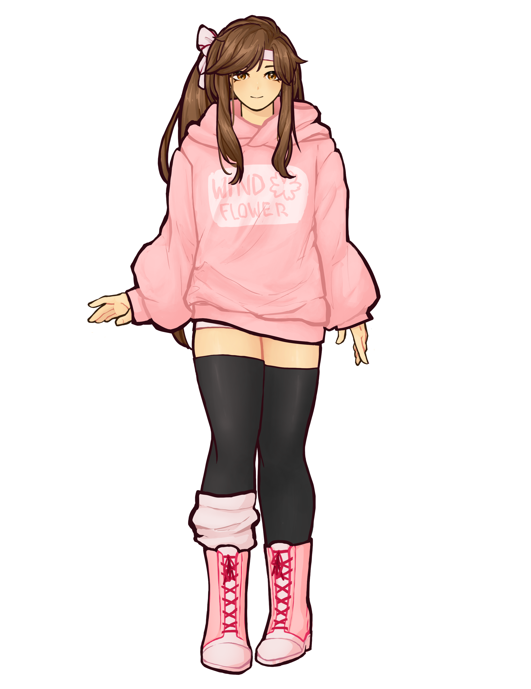
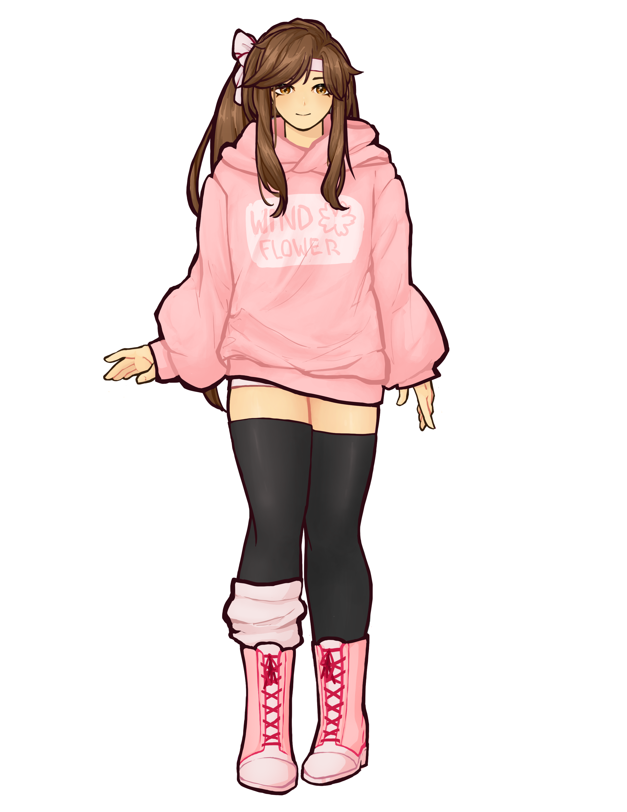

vtuber models
 

I made two vtuber models based on characters from Realm of the Mad God: Thessal the Mermaid Goddess and a skin of the ninja class, the Wind Flower Ninja . The illustrations were done in Photoshop, and rigged in Live2D.
{kind=link}
Thessal is a solely torso-up model as the model would primarily be used for video/streaming purposes. Additionally, I wanted to keep things simpler as this was my first time attempting a project like this. I also kept the back hair less detailed, so the overall style of the model may be a little inconsistent. Followed along with the standard Live2D tutorial, the model has very basic rigging; the mouth opens/closes and smiles/frowns, there is basic body/head rotation, and a breathing effect. I also rigged the hair and ears to move, and set it to the breathing in VTube Studio (input/tracking app) for a constant passive movement.
For the Wind Flower model, I tried a full body illustration, though for most purposes the torso is all that is needed. Overall, her design was simpler, and I wanted to go for a more cute style. So, there were some differences in how I rigged the model, like the mouth. In a more anime-style way, the Wind Flower mouth was more exaggerated and rounded, bringing some more animated expressions.
Adobe Photoshop, Live2D; 2021